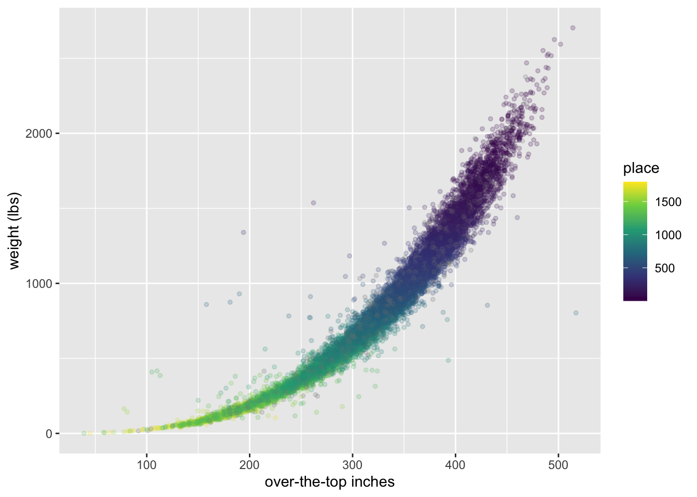
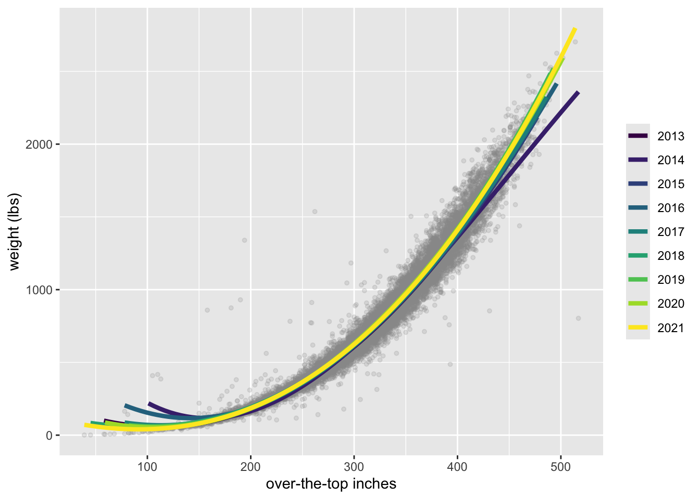
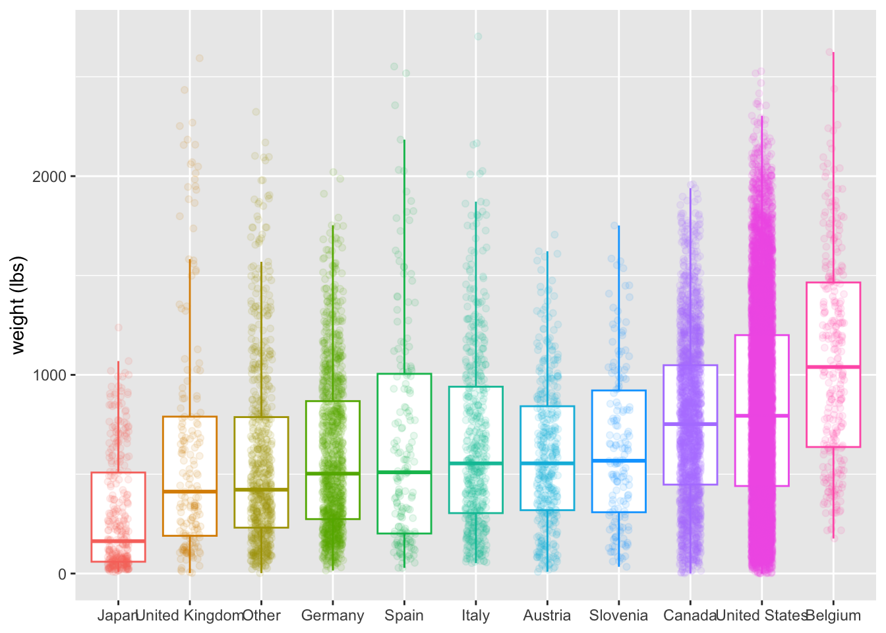
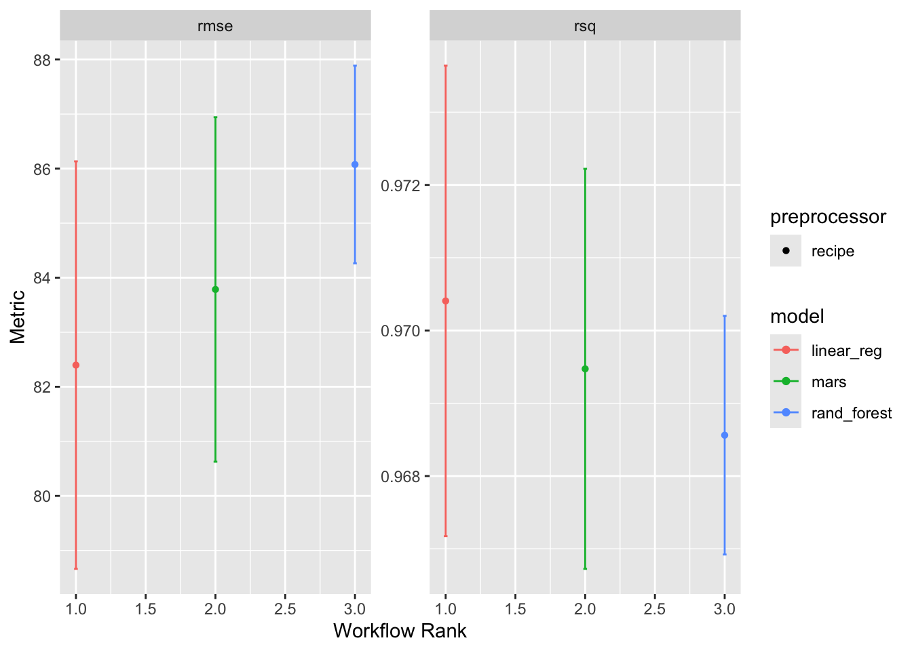

![]()
# Cargar librerías
library(tidymodels)
library(tidyverse)Introducción
En este post, exploraremos cómo utilizar tidymodels para construir y evaluar modelos predictivos que estimen el peso de calabazas gigantes. Además, agregaremos visualizaciones clave para analizar la correlación entre variables predictoras, el desempeño del modelo en validación cruzada, y la precisión de las predicciones.
Carga y Preparación de Datos
Primero, cargamos los datos y seleccionamos las variables de interés, asegurándonos de que estén limpias y en un formato adecuado para el modelado.
# Cargar y preparar datos
pumpkins_raw <- readr::read_csv("https://raw.githubusercontent.com/rfordatascience/tidytuesday/master/data/2021/2021-10-19/pumpkins.csv")Rows: 28065 Columns: 14
── Column specification ────────────────────────────────────────────────────────
Delimiter: ","
chr (14): id, place, weight_lbs, grower_name, city, state_prov, country, gpc...
ℹ Use `spec()` to retrieve the full column specification for this data.
ℹ Specify the column types or set `show_col_types = FALSE` to quiet this message.pumpkins <-
pumpkins_raw %>%
separate(id, into = c("year", "type")) %>%
mutate(across(c(year, weight_lbs, ott, place), parse_number)) %>%
filter(type == "P") %>%
select(weight_lbs, year, place, ott, gpc_site, country)Warning: There was 1 warning in `mutate()`.
ℹ In argument: `across(c(year, weight_lbs, ott, place), parse_number)`.
Caused by warning:
! 2327 parsing failures.
row col expected actual
13 -- a number EXH
36 -- a number EXH
58 -- a number EXH
60 -- a number EXH
61 -- a number EXH
... ... ........ ......
See problems(...) for more details.pumpkins# A tibble: 15,965 × 6
weight_lbs year place ott gpc_site country
<dbl> <dbl> <dbl> <dbl> <chr> <chr>
1 2032 2013 1 475 Uesugi Farms Weigh-off United…
2 1985 2013 2 453 Safeway World Championship Pumpkin Weig… United…
3 1894 2013 3 445 Safeway World Championship Pumpkin Weig… United…
4 1874. 2013 4 436 Elk Grove Giant Pumpkin Festival United…
5 1813 2013 5 430 The Great Howard Dill Giant Pumpkin Cla… Canada
6 1791 2013 6 431 Elk Grove Giant Pumpkin Festival United…
7 1784 2013 7 445 Uesugi Farms Weigh-off United…
8 1784. 2013 8 434 Stillwater Harvestfest United…
9 1780. 2013 9 422 Stillwater Harvestfest United…
10 1766. 2013 10 425 Durham Fair Weigh-Off United…
# ℹ 15,955 more rows# Dividir datos en conjunto de entrenamiento y prueba
set.seed(123)
data_split <- initial_split(pumpkins, prop = 0.8)
pumpkin_train <- training(data_split)
pumpkin_test <- testing(data_split)Análisis Exploratorio
La relación principal aquí es entre el volumen/tamaño de la calabaza y el peso.
pumpkins %>%
filter(ott > 20, ott < 1e3) %>%
ggplot(aes(ott, weight_lbs, color = place)) +
geom_point(alpha = 0.2, size = 1.1) +
labs(x = "over-the-top inches", y = "weight (lbs)") +
scale_color_viridis_c()
Las calabazas grandes y pesadas se colocaban más cerca de ganar en los concursos, ¡naturalmente!
¿Se ha producido algún cambio en esta relación con el paso del tiempo?
pumpkins %>%
filter(ott > 20, ott < 1e3) %>%
ggplot(aes(ott, weight_lbs)) +
geom_point(alpha = 0.2, size = 1.1, color = "gray60") +
geom_smooth(aes(color = factor(year)),
method = lm, formula = y ~ splines::bs(x, 3),
se = FALSE, size = 1.5, alpha = 0.6
) +
labs(x = "over-the-top inches", y = "weight (lbs)", color = NULL) +
scale_color_viridis_d()Warning: Using `size` aesthetic for lines was deprecated in ggplot2 3.4.0.
ℹ Please use `linewidth` instead.
Creo que es difícil de decir.
¿Qué países producían calabazas más o menos grandes?
pumpkins %>%
mutate(
country = fct_lump(country, n = 10),
country = fct_reorder(country, weight_lbs)
) %>%
ggplot(aes(country, weight_lbs, color = country)) +
geom_boxplot(outlier.colour = NA) +
geom_jitter(alpha = 0.1, width = 0.15) +
labs(x = NULL, y = "weight (lbs)") +
theme(legend.position = "none")
Construir y ajustar un conjunto de flujo de trabajo
Empecemos nuestro modelado estableciendo nuestro «presupuesto de datos». Estratificaremos por nuestro resultado weight_lbs
set.seed(123)
pumpkin_split <- pumpkins %>%
filter(ott > 20, ott < 1e3) %>%
initial_split(strata = weight_lbs)
pumpkin_train <- training(pumpkin_split)
pumpkin_test <- testing(pumpkin_split)
set.seed(234)
pumpkin_folds <- vfold_cv(pumpkin_train, strata = weight_lbs)
pumpkin_folds# 10-fold cross-validation using stratification
# A tibble: 10 × 2
splits id
<list> <chr>
1 <split [8954/996]> Fold01
2 <split [8954/996]> Fold02
3 <split [8954/996]> Fold03
4 <split [8954/996]> Fold04
5 <split [8954/996]> Fold05
6 <split [8954/996]> Fold06
7 <split [8955/995]> Fold07
8 <split [8956/994]> Fold08
9 <split [8957/993]> Fold09
10 <split [8958/992]> Fold10A continuación, vamos a crear tres recetas de preprocesamiento de datos: una que sólo agrupa los niveles de los factores utilizados con poca frecuencia, otra que también crea variables indicadoras y, por último, otra que también crea términos spline para las pulgadas de más.
base_rec <-
recipe(weight_lbs ~ ott + year + country + gpc_site,
data = pumpkin_train
) %>%
step_other(country, gpc_site, threshold = 0.02)
ind_rec <-
base_rec %>%
step_dummy(all_nominal_predictors())
spline_rec <-
ind_rec %>%
step_bs(ott)A continuación, vamos a crear tres especificaciones de modelo: un modelo de random forest, un modelo MARS y un modelo lineal.
rf_spec <-
rand_forest(trees = 1e3) %>%
set_mode("regression") %>%
set_engine("ranger")
mars_spec <-
mars() %>%
set_mode("regression") %>%
set_engine("earth")
lm_spec <- linear_reg()Ahora es el momento de juntar el preprocesamiento y los modelos en un workflow_set().
pumpkin_set <-
workflow_set(
list(base_rec, ind_rec, spline_rec),
list(rf_spec, mars_spec, lm_spec),
cross = FALSE
)
pumpkin_set# A workflow set/tibble: 3 × 4
wflow_id info option result
<chr> <list> <list> <list>
1 recipe_1_rand_forest <tibble [1 × 4]> <opts[0]> <list [0]>
2 recipe_2_mars <tibble [1 × 4]> <opts[0]> <list [0]>
3 recipe_3_linear_reg <tibble [1 × 4]> <opts[0]> <list [0]>Utilizamos cross = FALSE porque no queremos todas las combinaciones de estos componentes, sólo tres opciones para probar. Vamos a ajustar estos posibles candidatos a nuestras remuestreos para ver cuál de ellos funciona mejor.
Entrenamiento y Selección del Mejor Modelo
Usamos workflow_map para evaluar los modelos en cada pliegue de validación cruzada y extraemos el mejor modelo según la raíz del error cuadrático medio (RMSE).
#doParallel::registerDoParallel()
set.seed(2021)
pumpkin_rs <-
workflow_map(
pumpkin_set,
"fit_resamples",
resamples = pumpkin_folds
)→ A | warning: some 'x' values beyond boundary knots may cause ill-conditioned basesThere were issues with some computations A: x1There were issues with some computations A: x2pumpkin_rs# A workflow set/tibble: 3 × 4
wflow_id info option result
<chr> <list> <list> <list>
1 recipe_1_rand_forest <tibble [1 × 4]> <opts[1]> <rsmp[+]>
2 recipe_2_mars <tibble [1 × 4]> <opts[1]> <rsmp[+]>
3 recipe_3_linear_reg <tibble [1 × 4]> <opts[1]> <rsmp[+]>Evaluar el conjunto de flujos de trabajo
How did our three candidates do?
autoplot(pumpkin_rs)
No hay mucha diferencia entre las tres opciones, y si acaso, nuestro modelo lineal con ingeniería de rasgos spline quizás lo hizo mejor. ¡Esto es bueno porque es un modelo más simple!
collect_metrics(pumpkin_rs)# A tibble: 6 × 9
wflow_id .config preproc model .metric .estimator mean n std_err
<chr> <chr> <chr> <chr> <chr> <chr> <dbl> <int> <dbl>
1 recipe_1_rand_f… Prepro… recipe rand… rmse standard 86.1 10 1.10e+0
2 recipe_1_rand_f… Prepro… recipe rand… rsq standard 0.969 10 9.97e-4
3 recipe_2_mars Prepro… recipe mars rmse standard 83.8 10 1.92e+0
4 recipe_2_mars Prepro… recipe mars rsq standard 0.969 10 1.67e-3
5 recipe_3_linear… Prepro… recipe line… rmse standard 82.4 10 2.27e+0
6 recipe_3_linear… Prepro… recipe line… rsq standard 0.970 10 1.97e-3Podemos extraer el flujo de trabajo que queremos utilizar y ajustarlo a nuestros datos de entrenamiento.
final_fit <-
extract_workflow(pumpkin_rs, "recipe_3_linear_reg") %>%
fit(pumpkin_train)Podemos utilizar un objeto como este para predecir, por ejemplo en los datos de prueba como predict(final_fit, pumpkin_test), o podemos examinar los parámetros del modelo.
tidy(final_fit) %>%
arrange(-abs(estimate))# A tibble: 15 × 5
term estimate std.error statistic p.value
<chr> <dbl> <dbl> <dbl> <dbl>
1 (Intercept) -9731. 675. -14.4 1.30e- 46
2 ott_bs_3 2585. 25.6 101. 0
3 ott_bs_2 450. 11.9 37.9 2.75e-293
4 ott_bs_1 -345. 36.3 -9.50 2.49e- 21
5 gpc_site_Ohio.Valley.Giant.Pumpkin.Gr… 21.1 7.80 2.70 6.89e- 3
6 country_United.States 11.9 5.66 2.11 3.53e- 2
7 gpc_site_Stillwater.Harvestfest 11.6 7.87 1.48 1.40e- 1
8 country_Germany -11.5 6.68 -1.71 8.64e- 2
9 country_other -10.7 6.33 -1.69 9.13e- 2
10 country_Canada 9.29 6.12 1.52 1.29e- 1
11 country_Italy 8.12 7.02 1.16 2.47e- 1
12 gpc_site_Elk.Grove.Giant.Pumpkin.Fest… -7.81 7.70 -1.01 3.10e- 1
13 year 4.89 0.334 14.6 5.03e- 48
14 gpc_site_Wiegemeisterschaft.Berlin.Br… 1.51 8.07 0.187 8.51e- 1
15 gpc_site_other 1.41 5.60 0.251 8.02e- 1Los términos spline son, con mucho, los más importantes, pero se observan indicios de que determinados lugares y países predicen el peso (ya sea hacia arriba o hacia abajo), así como una pequeña tendencia de calabazas más pesadas con el año.
Conclusión
El análisis predictivo de peso de calabazas gigantes usando tidymodels permite una comparación robusta de múltiples modelos y una visualización clara del desempeño. Este flujo de trabajo facilita tanto la elección del modelo adecuado como la interpretación de los factores que afectan la variable de respuesta. ¡Explorar estos modelos en sus propios datos puede ser un ejercicio valioso para mejorar la comprensión de las herramientas de tidymodels!
Citation
BibTeX citation:
@online{santos2024,
author = {Santos, Franklin},
title = {Análisis Predictivo Usando Tidymodels},
date = {2024-09-29},
url = {https://franklinsantosm.com/posts/ml_punpkin_weith_prediction/},
langid = {en}
}
For attribution, please cite this work as:
Santos, Franklin. 2024. “Análisis Predictivo Usando
Tidymodels.” September 29, 2024. https://franklinsantosm.com/posts/ml_punpkin_weith_prediction/.